Photos I’m proud of
Decorative header graphic
Eddie the beagle
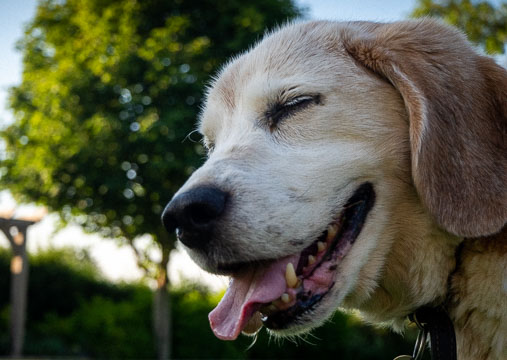
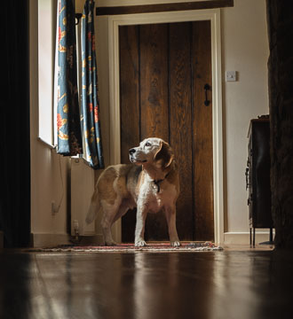
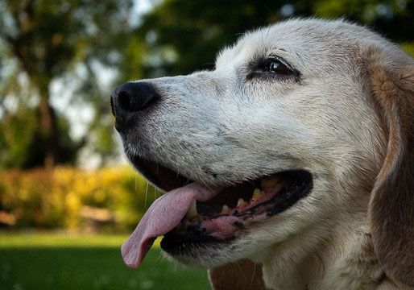
Live music
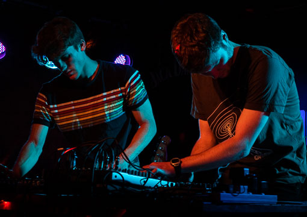
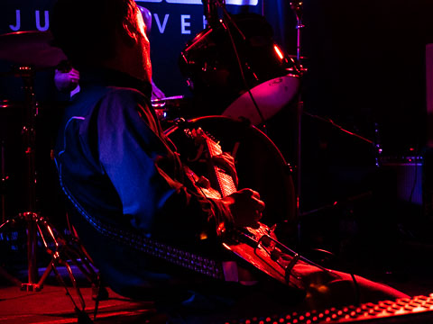
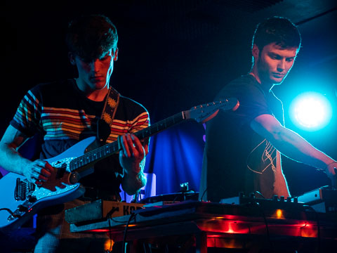
Countryside
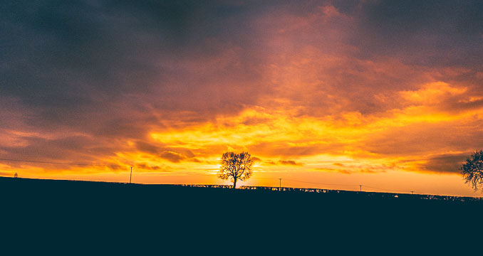
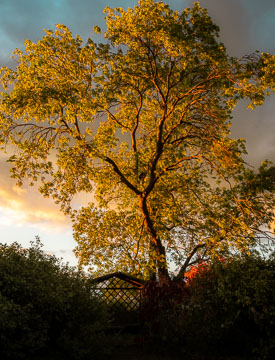
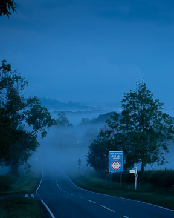
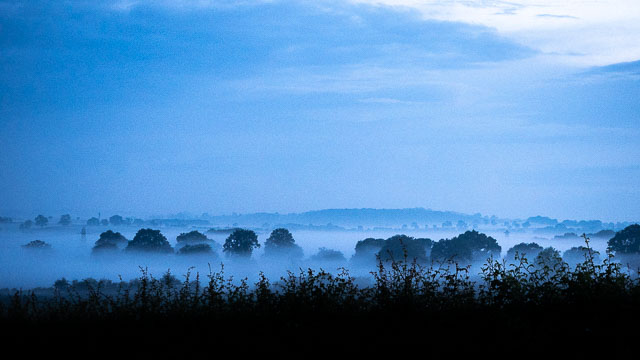
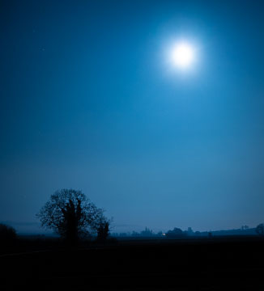
Abstract long exposures
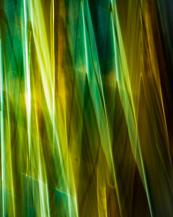
Tap
Click
anywhere to close
Home
Current colour mode: Light
Current colour mode: Dark